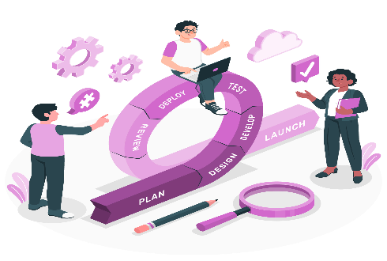

This is avisulization of Deming Cyrcle
ACT
Tace action to standardize
improve the process
PLAN
Plan ahead for change
Analyzefa-border
and predict the result
CHECK
Study the results
of plans
DO
Execute the plan,taking small steps
in controlled circumstances

- satisfy the customer
- wellcome change
- deliver freqenly
- work together
- trust and support
- face-to-face conversation
- working software
- sustainable development
- continuous attention
- maintain simplicity
- self-organizing teams
- reflect and adjust